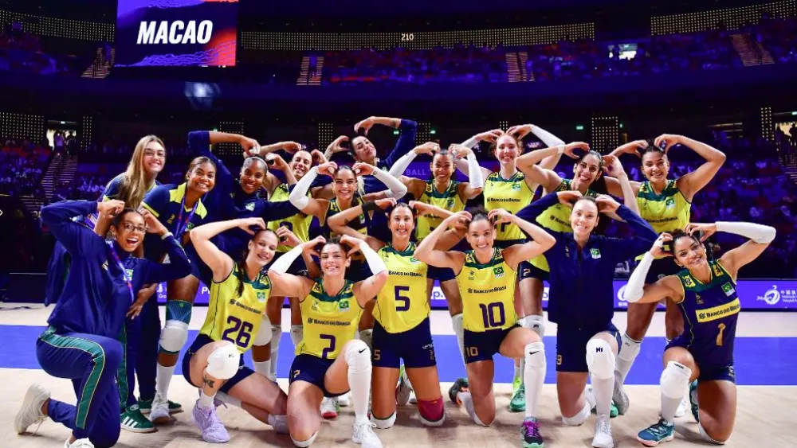

Real Madrid campeão (de novo) da Champions: como fica a lista atualizada de títulos?
O Real Madrid conseguiu neste sábado (1º) algo que é a obsessão de muitos clubes, mas uma rotina na sua história: o título da Champions League.
Em Wembley, os merengues bateram o Borussia Dortmund para abocanhar a 15ª taça do maior torneio de clubes da Europa. Os gols foram marcados por Carvajal e Vinicius Jr.
A conquista faz a equipe espanhola se isolar ainda mais no ranking de maiores vencedores da Liga dos Campeões. Com 15, o Real Madrid tem mais que o dobro do Milan, aquele que mais se aproxima em títulos, com sete.
/i.s3.glbimg.com/v1/AUTH_da025474c0c44edd99332dddb09cabe8/internal_photos/bs/2024/K/e/4ABki9RxugiXQxg20QkQ/107148367-real-madrid-celebrate-with-the-trophy-after-the-uefa-champions-league-final-football-match.jpg)
Vôlei Feminino: Brasil bate recorde na VNL e evolui em preparação para Olimpíada
O Brasil venceu a Tailândia com tranquilidade nesse domingo (2) e alcançou um recorde próprio na Liga das Nações (VNL) de Vôlei Feminino. Pela primeira vez, as brasileiras venceram os primeiro oito jogos do torneio de seleções. Mais que isso, a segunda semana de jogos serviu como evolução para algumas jogadoras.
Por ter vaga garantida na Olimpíada, a VNL pode ser utilizada como testes para o Brasil. José Roberto usou a segunda semana para dar consistência ao time que pode ser considerado titular. Nos principais momentos, o Brasil jogou com: Roberta (levantadora), Thaisa e Carol (centrais), Gabi e Ana Cristina (ponteiras), Rosamaria (oposta) e Nyeme (líbero).
